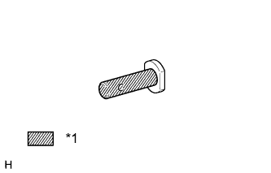

ГИДРАВЛИЧЕСКИЙ УСИЛИТЕЛЬ ТОРМОЗНОЙ СИСТЕМЫ (для моделей с левосторонним рулевым управлением) > УСТАНОВКА |
| 1. УСТАНОВИТЕ ПРОКЛАДКУ УСИЛИТЕЛЯ ТОРМОЗНОЙ СИСТЕМЫ |
Установите новую прокладку усилителя тормозной системы на гидравлический усилитель тормозной системы.
| 2. УСТАНОВИТЕ ГИДРАВЛИЧЕСКИЙ УСИЛИТЕЛЬ ТОРМОЗНОЙ СИСТЕМЫ В СБОРЕ |
Установите гидравлический усилитель тормозной системы в сборе и закрепите его 4 гайками.
 |
Подсоедините 4 трубопровода тормозной системы в соответствующие места гидравлического усилителя тормозной системы в сборе, как показано на рисунке.
С помощью разрезной головки подсоедините 4 трубопровода тормозной системы к гидравлическому усилителю тормозной системы в сборе.
Подсоедините 3 разъема к гидравлическому усилителю тормозной системы.
| 3. УСТАНОВИТЕ ШТИФТ ШТОКА |
|  |
Нанесите тонким слоем гликолевую консистентную смазку на основе литиевого мыла на внутреннюю поверхность отверстия рычага педали тормоза.
| *1 | Гликолевая консистентная смазка на основе литиевого мыла |
 |
Установите на место вилку штока главного цилиндра, вставьте штифт штока с левой стороны автомобиля, а затем установите новый фиксатор.
| 4. УСТАНОВИТЕ ПОДУШКУ БЕЗОПАСНОСТИ № 1 ДЛЯ ЗАЩИТЫ НОГ В СБОРЕ |
Установите подушку безопасности № 1 для защиты ног в сборе (Нажмите здесь).
| 5. ПОДСОЕДИНИТЕ ПРОВОД К ОТРИЦАТЕЛЬНОМУ (-) ВЫВОДУ АККУМУЛЯТОРНОЙ БАТАРЕИ |
| 6. ПРОКАЧАЙТЕ ТОРМОЗНУЮ СИСТЕМУ |
Установите замок зажигания в положение ON (ВКЛ).
Снимите крышку наливного отверстия бачка главного цилиндра тормозной системы в сборе.
Добавляйте тормозную жидкость до тех пор, пока ее уровень не окажется между отметками MIN и MAX бачка.
Многократно нажимая на педаль тормоза, удалите воздух из прокачного штуцера колесного тормозного цилиндра правого переднего дискового тормоза.
Повторяйте рассмотренную выше операцию до тех пор, пока воздух не будет удален полностью, а затем затяните прокачной штуцер, удерживая нажатой педаль тормоза.
Удалите воздух из прокачного штуцера колесного тормозного цилиндра левого переднего дискового тормоза таким же образом, как с правой стороны.
Удерживая нажатой педаль тормоза, ослабьте прокачной штуцер колесного тормозного цилиндра правого заднего дискового тормоза и, не отпуская педаль тормоза, дайте тормозной жидкости вытекать из прокачного штуцера, пока работает электродвигатель насоса.
Когда в тормозной жидкости не будет воздуха, затяните прокачной штуцер, а затем отпустите педаль тормоза.
Удалите воздух из прокачного штуцера колесного тормозного цилиндра левого заднего дискового тормоза таким же образом, как с правой стороны.
Выключите зажигание и подсоедините портативный диагностический прибор к разъему DLC3.
Установите замок зажигания в положение ON (ВКЛ).
Включите портативный диагностический прибор.
Войдите в следующие меню: Chassis / ABS/VSC/TRC / Utility / Air Bleeding.
Несколько раз нажмите на педаль тормоза а затем, удерживая ее нажатой, включите FR Line и удалите воздух.
Включите FL Line и удалите воздух таким же образом, как для FR.
Включите RR Line, ослабьте прокачной штуцер колесного тормозного цилиндра правого заднего дискового тормоза и слейте тормозную жидкость.
Повторяйте рассмотренную выше операцию до тех пор, пока воздух не будет удален полностью, а затем затяните прокачной штуцер.
Включите RL Line и удалите воздух из прокачного штуцера колесного тормозного цилиндра левого заднего дискового тормоза таким же образом, как с правой стороны.
Выключите портативный диагностический прибор и зажигание.
Проверьте, нет ли утечек тормозной жидкости.
Проверьте и отрегулируйте уровень тормозной жидкости (Нажмите здесь).
Удалите коды DTC (Нажмите здесь).
| 7. ПРОВЕРЬТЕ И ОТРЕГУЛИРУЙТЕ ПЕДАЛЬ ТОРМОЗА |
Проверьте и отрегулируйте педаль тормоза (Нажмите здесь).
| 8. ПРОВЕРЬТЕ РАБОТУ ГЛАВНОГО ЦИЛИНДРА ТОРМОЗНОЙ СИСТЕМЫ |
Проверьте работу главного цилиндра тормозной системы (Нажмите здесь).
| 9. ВЫПОЛНИТЕ КАЛИБРОВКУ "НУЛЯ" ДАТЧИКА ЗАМЕДЛЕНИЯ И РЫСКАНЬЯ |
Выполните калибровку "нуля" датчика замедления и рысканья (Нажмите здесь).